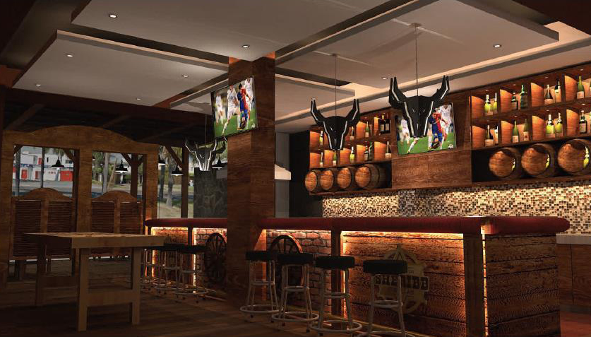
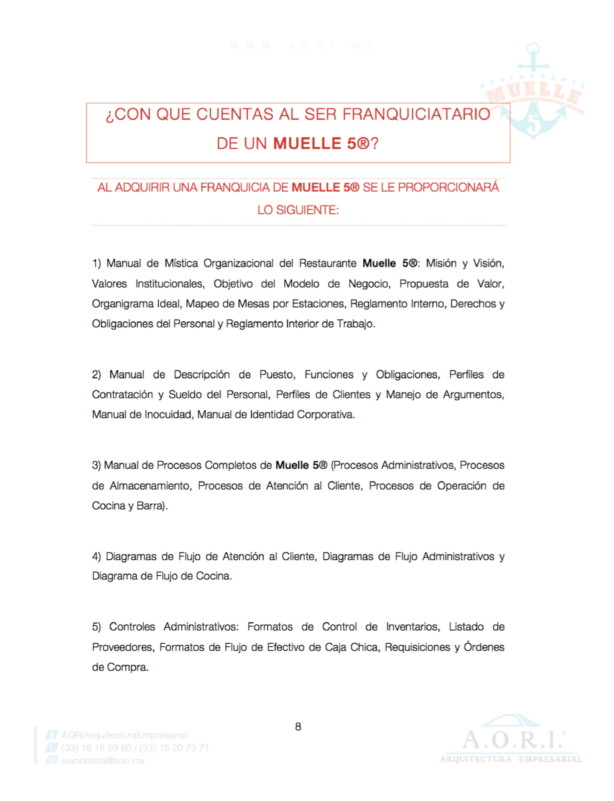
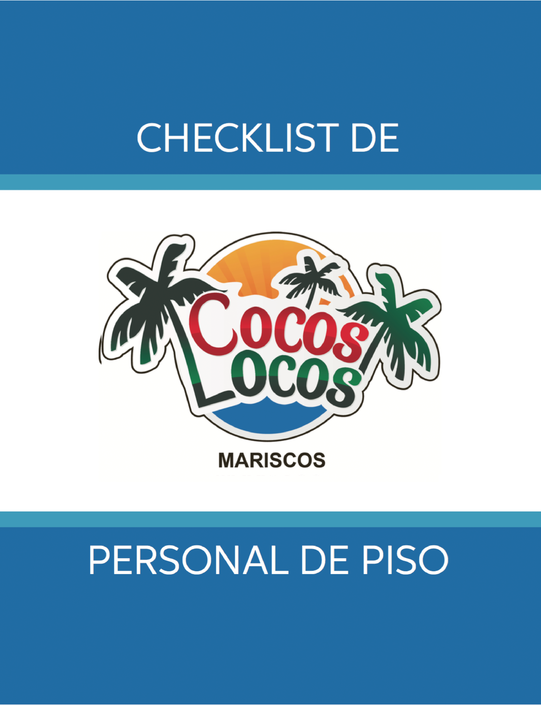

<!DOCTYPE>
<div class="# sub_servicios">

    <div class="estandarizacion_franquicia">

        <p class="descripcion">
            Estandarización general del Modelo de Negocio desde señalización, adecuación, mobiliario, procesos y comunicación. Si tu intención es franquiciar, concesionar o crecer de forma propia a través de sucursales, es de suma importancia estandarizar
            tu negocio desde todos sus ángulos. Con esto podrás hacer transmisible la experiencia, producto o servicio que llevas a cabo en tu empresa para poder aspirar a replicar los resultados nancieros que hicieron factible desde un inicio a al
            modelo inicial. Al final todo se trata de transmisibilidad de tu “know-how”.</br>
        </p>
            
            <div class="grid">
                 
            </div>
        
    </div>

    <div class="elaboracion">

        <p class="descripcion">
            
            La forma para poder asegurar la correcta transmisión de cualquier elemento de tu Modelo de Negocio original será a través de guías o manuales que nos den la pauta de poder asegurar el replicar cualquier proceso con exactitud para crecer de forma sustentable.
        </p>

        <div class="subfooter uppercase">
            <br>
            <p>El modelo de franquicia es por excelencia la mejor manera a nivel mundial de crecer tu negocio. 7 de cada 10 empresas que se franquician en méxico pasan la barrera de los 5 años</p>
        </div>
        <div class="grid2">
            <div class="centered">
                
                
                
                
                
                
            </div>
        </div>
    </div>

    <div class="implementacion">

        <p class="descripcion">
            Si cuentas con manuales pero no se encuentran implementados, te ayudamos a estudiarlos y capacitar a tu personal a través de éstos. A la vez, si cuentas con franquicias o sucursales te ayudamos a auditarlos para generar un reporte detallado de cuáles
            áreas presentan problemas que dificulten el operar bajo un estándar.
        </p>
        <div class="grid2">
            <div class="centered">
                
                
                
            </div>
        </div>
    </div>
    <div class="portafolio">
        <p class="descripcion">
            En nuestro portafolio de inversion podrás encontrar desde franquicias y negocios de bajo riesgo y alta rentabilidad.En nuestro despacho nos encargamos de incluir al portafolio únicamente proyectos que hayan sido elaborados por nosotros, o que cuenten
            con una factibilidad financiera probada y hayan sido estudiados para asegurar que son negocios de bajo riesgo, alto impacto comercial y con un TIR del 12% mensual en adelante. De esta forma les damos a nuestros inversionistas un abanico de
            excelentes oportunidades que, según su perfil, podrán selecccionar con nuestro completo asesoramiento.
        </p>
        
    </div>
</div>
